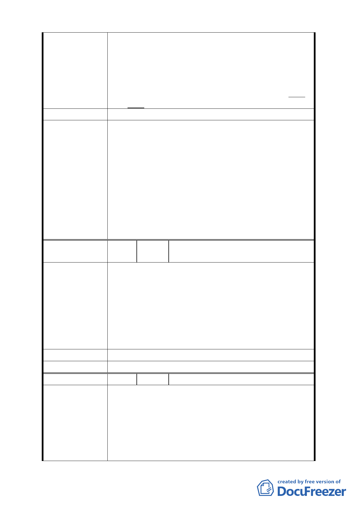

故建議視覺廊道「街廓編號 A1、A2、B1、B2 街
廓內臨接退縮五公尺人行道其兩側每單一土地細
分規模之建築基地及C2街廓內須留設至少一處南
北向生態及山稜視景廊道，其兩側建築物高度比
依前開規定辦理，自指定退縮地界線起35公尺範
圍內之建築物高度比不得超過1.5」之規定，應予
取消。
建 議 辦 法 （同上）
一、大彎北段地區係屬「2010 年臺北好好看」之科技產
業軸帶，基於其規劃理念係為提供產業進駐誘因、
帶動城市發展活力，故區內「2010 年臺北好好看」
申請案之「土地使用」部分，其因申請好好看所獲
容積獎勵部分同意得比照商三所允許之使用項
委員會決議
目，惟不得作住宅之使用；至於其餘部分仍應依本
區 92 年都市計畫之規定辦理，不得作住宅之使用。
二、有關臺北好好看申請案之建築物高度管制部分，經
委員會決議採不記名投票方式表決結果為「建築高
度 70 公尺（上限）、視覺廊道 40 公尺（下限）」。
編
號
3
陳情人
吳議長碧珠 99.4.9 依陳情人之意見轉
述
一、「促進都市再生 2010 年臺北好好看」申請案所要求
99 年 3 月前必須取得建築執照及 99 年 9 月前必須
開工等時程管制，市府應詳細檢討內部行政整合協
陳情理由
調時間，於扣除不可歸責於申請人部分之時程後予
以延長。
二、全案應秉持市府推案之美意，朝專案變更方式儘速
完成各階段之審議作業。
建 議 辦 法 （同上）
委 員 會 決 議 所提建議業已錄案供委員審議參考。
編 號 4 陳情人 奇泰建設有限公司等 4 家
一、「金泰段臺北好好看開發案」幾經折衝，已悉依台
北市政府都市發展局 (以下簡稱「都發局」)98 年
10 月 30 日北市都規字第 09836521507 號函規定表
陳情理由
訂規範內容、格式，於民國 98 年 11 月 3 日送請台
北市都市計畫委員會(以下簡稱「都委會」) 辦理
公展在案、俟後獲台北市政府府都規字第
09838862600 號函於 98 年 12 月 23 日至 99 年 1 月
- 43 -